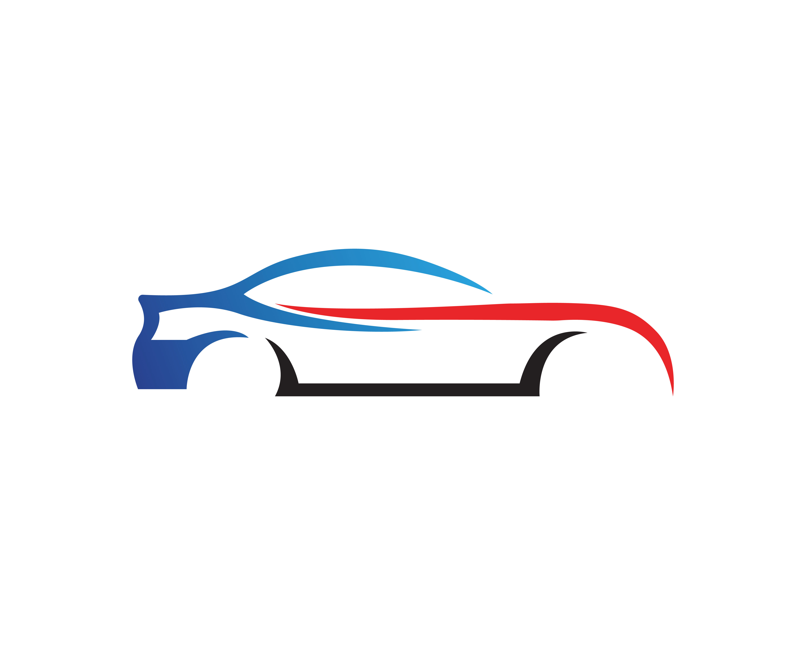

<!doctype html>
<html>
<head>
  <!-- ... -->
  <title>Tuned_Carz | Body Tuning</title>
  <meta charset="UTF-8" />
  <meta name="viewport" content="width=device-width, initial-scale=1.0" />
  <link href="./assets/tailwind.css" rel="stylesheet">
</head>
<body class="bg-gray-100">
  <div class="sticky bg-white py-4 top-0 z-10 w-full flex flex-row justify-between items-center space-x-4 text-center mb-8 border-b-2 border-indigo-300">
    
    <div class="flex-grow flex justify-between space-x-4 px-10 h-12">
      <a href="./index.html" class="inline-flex items-center justify-center px-5 py-2 text-lg text-center flex-grow rounded font-semibold tracking-tight uppercase bg-indigo-100 text-indigo-500 hover:text-gray-100 hover:bg-gradient-to-r hover:from-green-400 hover:to-blue-500 hover:ring-4">Home Page</a>
      <a href="./engine.html" class="inline-flex items-center justify-center px-5 py-2 text-lg text-center flex-grow rounded font-semibold tracking-tight uppercase bg-indigo-100 text-indigo-500 hover:text-gray-100 hover:bg-gradient-to-r hover:from-green-400 hover:to-blue-500 hover:ring-4">Engine Tuning</a>
      <a href="./body.html" class="inline-flex items-center justify-center px-5 py-2 text-lg text-center flex-grow rounded font-semibold tracking-tight uppercase bg-indigo-100 text-indigo-500 hover:text-gray-100 hover:bg-gradient-to-r hover:from-green-400 hover:to-blue-500 hover:ring-4">Body Tuning</a>
    </div>
  </div>

  <div class="px-4 md:px-8">

    <h2 class="text-center py-5 underline font-semibold text-xl text-indigo-500">
      Body Tuning
    </h2>
    <div class="flex justify-between">
      <p class="text-black text-justify py-5 my-2 flex-grow">
        Body tuning involves making modifications to the body of the car in order to alter the aesthetics of the car, improve performance, or both. 
        Body tuning can also involve changing or replacing parts for better aerodynamic performance. 
        Through downforce, cornering speeds and tire adhesion can be improved, often at the expense of increased drag. 
        To lighten the vehicle, bodywork components such as hoods and rearview mirrors may be replaced with lighter-weight components.
        Often, body modifications are done mainly to improve a vehicle's appearance, as in the case of non-functioning scoops, wide arches or other aesthetic modification. 
        Aftermarket spoilers or body kits rarely improve a car's performance. 
        The majority, in fact, add weight and increase the drag coefficient of the vehicle, thus reducing its overall performance.
      </p>
      
    </div>
    <h2 class="text-center py-5 underline font-semibold text-xl text-indigo-500">
      Liberty Walk: Biggest Body Shop
    </h2>
    <div class="flex justify-between">
      
      <p class="text-black text-justify py-5 my-2 flex-grow">
        Liberty Walk was established by Wataru Kato when he was 26 years old. 
        The business was first operated in a small vehicle lot where they could only exhibit 3 cars. 
        Liberty Walk has evolved throughout its history into one of the biggest names in automotive tuning. 
        Put simply, there is no other brand out there being quite so brave, or seemingly capturing the current tuning zeitgeist as this brand.
        LB PERFORMANCE is an aftermarket body kit maker/brand produce by Liberty Walk. 
        All parts designed by LB PERFORMANCE focus on attractive vehicle styling, therefore, not only they introduce aero kits but other parts such as spoiler, exhaust, and air suspension upgrade.
      </p>
    </div>
  </div>

  <footer class="my-8">
    <div class="w-full flex flex-row justify-between space-x-2 text-center">
      <a href="./FAQ.html" class="block px-5 py-2 flex-grow rounded font-semibold tracking-tight uppercase bg-indigo-100 text-indigo-500 hover:text-gray-100 hover:bg-gradient-to-r hover:from-green-400 hover:to-blue-500 hover:ring-4">FAQ</a>
      <a href="https://libertywalk.co/" target="_blank" class="block px-5 py-2 flex-grow rounded font-semibold tracking-tight uppercase bg-indigo-100 text-indigo-500 hover:text-gray-100 hover:bg-gradient-to-r hover:from-green-400 hover:to-blue-500 hover:ring-4">Shop for body parts</a>
      <a href="./" class="block px-5 py-2 flex-grow rounded font-semibold tracking-tight uppercase bg-indigo-100 text-indigo-500 hover:text-gray-100 hover:bg-gradient-to-r hover:from-green-400 hover:to-blue-500 hover:ring-4">Gallery</a>
    </div>
  </footer>
</body>
</html>